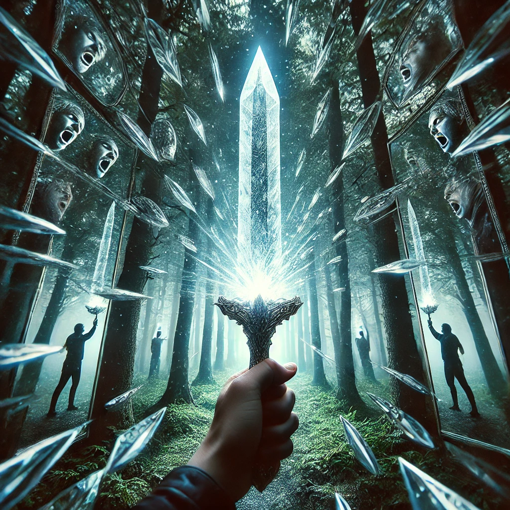

Your hand closes around the crystalline dagger. Its surface glints with a cold, sharp light, and as you lift it, it feels both weightless and impossibly heavy. The dagger pulses faintly, and you sense its power reaching deep into your mind.
“This is the Dagger of Shadows,” the being says, its voice solemn. “It cuts through illusions, exposing truths that lie hidden in darkness. But be warned—wielding this blade will force you to confront the shadows within yourself.”
Holding the dagger, the forest around you begins to dissolve, replaced by a hall of mirrors. Each reflection shows a different version of yourself—some serene, others monstrous, and many unrecognizable. A voice whispers:
“Face the shadow. Only by embracing it can you discover your strength.”
The mirrors shimmer, presenting you with choices for how to wield the dagger and confront your inner darkness.

What will you do?